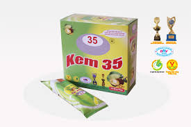

|  | KEM QUE CỐM MÍT |
Mô tả Kem Tràng Tiền là một thương hiệu kem nổi tiếng đã lâu và đã trở thành 1 nét không thể thiếu trong văn hóa ẩm thực Hà thành. 35 Tràng Tiền dường như đã trở thành một địa chỉ quen thuộc với hầu hết người dân Hà Nội nói riêng và những người đã từng đặt chân đến thủ đô nói chung. Ở đây giống như 1 đại lí kem hơn là 1 quán kem với không gian hẹp và văn hóa xếp hàng khi mua kem, không bàn ghế, không người phục vụ tận nơi. Mặc dù vậy thì ở đây vẫn luôn đông khách không chỉ bởi chất lượng kem mà còn bởi vị trí đắc địa giữa trung tâm, ngay cạnh Hồ Gươm. Mở cửa từ 8h sáng - 10h đêm. |
|